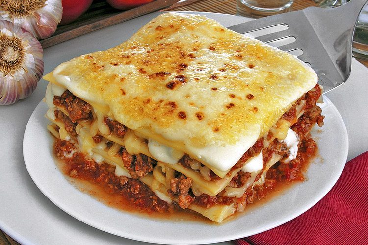

.jpg)
💕Bem-Vindo(a)!!
By: Jaquelane Silva
Olá, tudo bem? Vou usar esse blog para compartinhar algumas receitas culinárias simples. Espero que goste do conteúdo :)
Venha aprender!
By: Jaquelane Silva
Olá, tudo bem? Vou usar esse blog para compartinhar algumas receitas culinárias simples. Espero que goste do conteúdo :)

🛒Ingredientes:
500 g de carne moída;
1 cebola picada;
2 dentes de alho picados;
1 sachê de molho de tomate;
2 tomates picados;
1 colher de sopa de óleo ou azeite;
Sal e pimenta-do-reino a gosto;
Orégano ou cheiro-verde a gosto.
montar:500 g de massa para lasanha;
300 g de presunto;
400 g de muçarela;
50 g de queijo parmesão ralado;
Molho à bolonhesa suficiente para as camadas.
👩🍳Modo de preparo:
Prepare o molho: aqueça o óleo e refogue a cebola e o alho. Acrescente a carne moída e cozinhe até ela ficar bem soltinha e cozida. Adicione os tomates e o molho de tomate. Tempere com sal, pimenta e orégano. Deixe cozinhar por aproximadamente 15 minutos, mexendo de vez em quando. Monte a lasanha: Coloque um pouco de molho no fundo da assadeira. Faça uma camada de massa, depois presunto, muçarela e molho. Repita as camadas até acabar os ingredientes. Finalize com bastante muçarela e parmesão. Cubra com papel-alumínio e leve ao forno preaquecido a 180 °C por cerca de 30 minutos. Depois, retire o papel e deixe mais alguns minutos para gratinar. Espere uns 5 a 10 minutos antes de cortar e depois está prontinho para ser servido!!